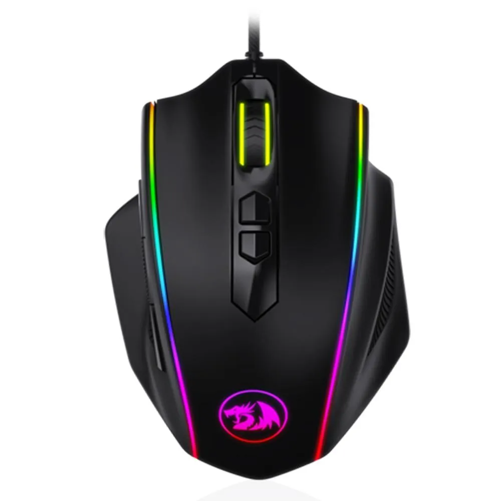
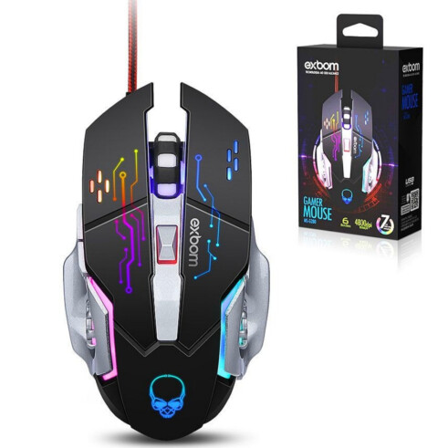
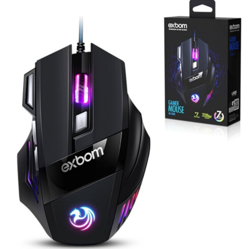
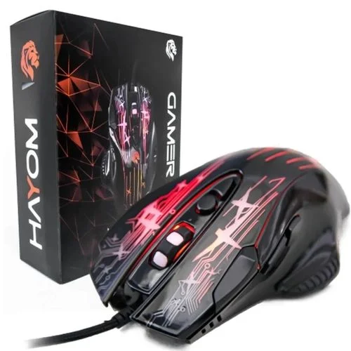

Mouse Gamer
R$500,00
Características Marca
- Redragon
- M711 V2
- Sensor PIXART 3327 para Alta Performance (12400DPI/20G/100ips) (óptico)
- Iluminação RGB Ajustável: Sistema de Iluminação Chroma RGB! (7 Diferentes Modos de Iluminação)
- Polling Rate de 1000hz (Tempo de Resposta Ajustável via Software de 1/2/4/8ms)
- 7 Botões Programáveis
- Comprimento: 1.8 metros
- Cabo de fibra trançada
- 2 Botões Laterais para funções / atalhos, macros e etc
- Compatível com Software para Configuração de Macro / Ajuste Iluminação RGB / Configurações de Performance
- Memória Interna para Salvamento de Configurações
- Base com Pés de Teflon para Deslize Suave
- 5 Perfis de Configurações para Troca Rápida de Configurações de um Game para Outro
- Pegada Ergonômica confortável perfeita para Destros
- Cabo Trançado para maior Resistência
- - Mouse Gamer Redragon Cobra Preto RGB M711 V2
- 12 meses de garantia
- 250 gramas (bruto com embalagem)